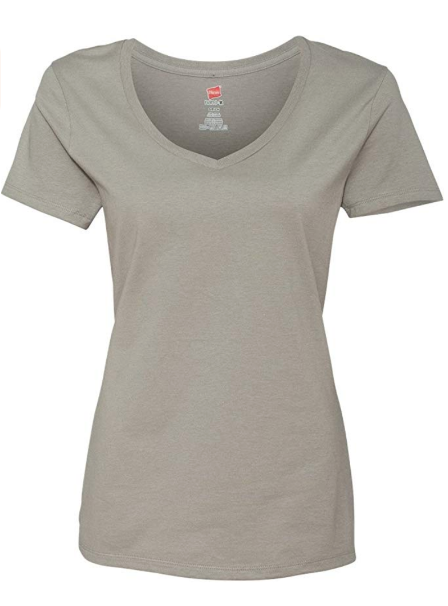
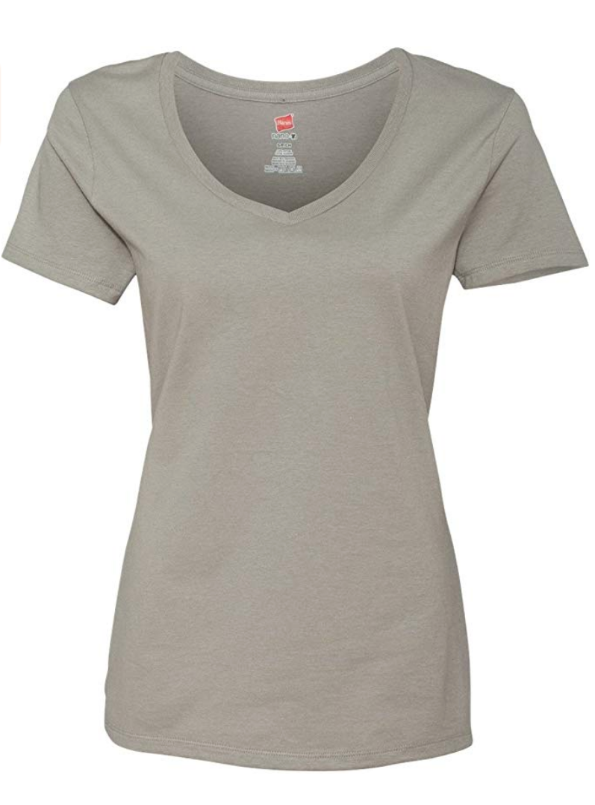

Project Proposal - The Seam Team
CS 4476 - Computer Vision
Team members: Deb Banerji, Christine Hsieh, Kevin Chen, Kirtan Patel, Rohith Krishnan, Suraj MasandProblem Statement
Finding clothes that fit properly is extremely difficult in stores. Various fits, styles, and brands make it difficult for shoppers to know how clothing will look on them without trying it on. The process becomes even more challenging through the online shopping process. When shopping online, users can only view the basic fit on models presented by the retailer, often getting the wrong impression about how an outfit might look on them. Oftentimes, the model is of the “ideal”, physically fit physique, instead of the average body shape of most individuals. To allow shoppers to gain a better impression of how clothing might fit on their body, we propose a solution to allow users to take the image of a piece of clothing and overlay it on an image of their body so that they can better see what the item will look like on them.
From a technical perspective, this problem is more complicated than simply applying a homography transformation on an image, because different areas of clothing move and stretch in different ways. Our group plans on developing a system that uses a combination of homography and seam carving transformations to yield realistic results. To interact with this system, the user will be required to do three things:
- Upload an image of themselves in a standard pose
- Upload an image of the clothing item
- Click on key predefined points (ex: shoulder, hips) on the image of themselves (from step 1)
The user should expect an image of themselves in the clothing item they uploaded as output (from step 2). The goal is for this image to be a realistic and reliable way for users to judge whether or not they should purchase the given clothing item.
Approach
At the beginning of the project, we plan on focusing on developing a system just for t-shirts. The first step in the process would be to identify the individual components of the t-shirt, such as the torso and each of the sleeves. Then, we would like to pre-process the image into a custom file type that would store correspondence information, such as the outline of the shirt and the edges between the sleeves and torso. This file will contain the segmented image itself, as well as point information that will allow our system to create multiple homography matrices, one for each segment of the input image.
It is important to note that a simple homography mapping will not be sufficient for dealing with the contours of the input article of clothing, since even segments of articles of clothing are rarely close to square shaped in practice. The homography and warping process will therefore have to be modified in order to account for ‘transparent’ pixels, which are not within the boundary of the article of clothing. These pixels will also have to be detected before warping.
When the user uploads an image of themselves, we will add another preprocessing step that will scale the components of the t-shirt to the resolution of the user’s image. The user will choose the equivalent corresponding points on a picture of themselves wearing a plain shirt. We will then require the user to input an image of themselves in a standard predetermined pose. We want to use a combination of seam carving and a homography matrix to generate a transformed image of the t-shirt with the least amount of distortion that will fit on the user’s body. For example, our system will use homography for rotation and translation, but seam carving to expand the overall size of the shirt to prevent distortion of the shirt in any single direction, preventing distortion of important logos or pockets present in the input shirt. We also plan on manipulating the sleeves separately from the torso, and will use seam carving to fill in the holes to connect the torso with the sleeves.
Stretch Goals
- Be able to identify edges based on shadows and different lightings by utilizing filters to better find accurate correspondences for our homographies
- Apply this technology to more types of clothing including: dresses, loose clothing, formal attire, etc.
- Apply this technology to fit clothing onto users standing in a variety of poses.
- Use feature detection techniques to detect the sleeves of a shirt and break it up into different components, so the user does not manually need to select the sleeves
- Adding a shadow around the user to make the final image look more realistic


Ideally our system can be used on different clothing styles such as formal clothing
(Image Source: amazon.com)Experiment and Results
In the implementation of this project, we will utilize code that calculates the homography matrix to map the shirt onto the figure’s body. However, before this mapping can be completed we will need to analyze the image to assess whether or not the image must be shrunk or expanded in horizontal and vertical directions. In this modification of the image, we will need to use a modified version of the seam carving algorithm that utilizes a specific heuristic such that the clothing is modified in a realistic fashion. This will require extensive testing and parameter tweaking in the calculation of the energy function within the shirts. Additionally, for cases of sub-optimal lighting of the figure, we will need to find a way to analyze the image and apply filters so that the result of the overlay looks natural. Since our system will be the one applying the shirt onto the target image, we will be able to identify depth discontinuity caused by the edges of the object (without accidentally detecting other edges) and use this information as a heuristic to add more realistic lighting to the image.
To test the homography matrices that we generate for a figure and a given clothing item, we wish to test various lighting scenarios on both the image of the figure and the image of the clothing item. To establish consistency, we will establish a specific pose for individuals to follow when they take images of themselves. To start off, we hope to be able to map t-shirts onto both male and female models.


Standard pose that the user should follow when using our system
Based off of images viewed on major shopping sites we expect most clothing images presented by retailers to be of high quality and good lighting.
(Image Source: amazon.com)
 


Sample T-shirts we will use to test our system
(Image Source: amazon.com)
Data Collection
Since we do not require a training set to complete this assignment, the majority of our data collection will be from teammates going on Amazon.com and other clothing retail websites to pick up valid images of clothing items to test on. Additionally, we will be using a mixed variety of models also picked off of retail websites to try overlaying the clothing on top of as well as actual images taken from smartphones of students/friends that consent to being included in this project.
Testing Our Solution
A successful solution would be an image of a clothing item overlayed on a user's figure such that the result looks "natural". We define "natural" to satisfy the following constraints:
- Lack of image distortion shirt
- Lack of artifacts
- Proper alignment of shirt on body
- Lack of mismatched lighting
To test the results of our mapping, we will examine the following variations in the images:
-
Different lighting conditions of the image of the user posing
By testing lighting conditions, we will be able to assess how we much manipulate the image of the user so that the shirt that is overlaid on their body looks natural. For example, if an image is in dark lighting, but the clothing item is very bright there will be a very obvious discrepancy
-
Varying resolutions of the shirt/clothing item and of the image of the user posing
If the resolution of the shirt is significantly larger or smaller than the resolution of the figure then there will need to be scaling done before any homographies can be completed. Additionally, there will need to be a threshold in which the algorithm we create decides that seam carving is a more proper solution to increasing the dimensions of the clothing item because scaling would be an unrealistic representation of the shirt. We will need to test various resolutions to best accommodate these conditions and figure out what the “sweet spot” threshold will be.
-
Varying the location and number of clicks the user must provide to calculate the homography matrix
Because user input is required, we need to limit the number of clicks required because otherwise the user will not believe that using this tool is worth their time. Therefore we need to try to figure out the minimum number of points on that are strictly necessary for the user to identify in order for the mapping to work effectively. We expect that shoulder, end of sleeves, and hips will definitely be necessary, but are currently unsure about how the collar of the shirt will be accounted for, and how the requirements might change if the clothing item is a long-sleeved shirt.